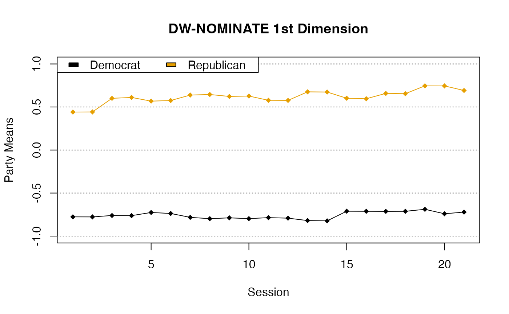

Estimate legislator ideal points using the DW-NOMINATE roll call scaling procedure featured in Poole and Rosenthal (2011) .
dwnominate( rc_list, id = NULL, start = NULL, sessions = NULL, dims = 2, model = 1, niter = 4, beta = 5.9539, w = 0.3463, polarity = NULL, ... )
| rc_list | A list of |
|---|---|
| id | Column name in the rollcall objects' |
| start | A roll call scaling result of class |
| sessions | A vector of length 2 providing the first and last
sessions to include. Defaults to |
| dims | The number of dimensions to estimate. Can be either 1 or 2. |
| model | The degree of the polynomial representing changes in
legislator ideology over time. |
| niter | Number of iterations. 4 iterations are typically enough for the results to converge. |
| beta | Starting estimate of the parameter representing the spatial error in legislator choices. |
| w | Starting estimate for the weight of the second dimension. The first dimension has a weight of 1, so w should be <= 1. |
| polarity | A vector of length 1 or |
| ... | Arguments passed to |
A list of class dwnominate containing:
legislators A data frame of legislator information
rollcalls A data frame of rollcall information
start The wnominate or oc results used as
starting points for DW-NOMINATE
DW-NOMINATE was introduced in McCarty et al. (1997) . It's an extension of the older D-NOMINATE program (Poole and Rosenthal 1991) that uses the "weighted" distance model first used by W-NOMINATE.
The model assumes that legislators have Guassian utility functions centered around their ideal points, along with an additional roll call-specific random utility that makes the voting decisions probabilistic rather than deterministic.
The returned values are a maximum likelihood estimate of the model parameters
(with minor exceptions around the boundary of the space). DW-NOMINATE uses a
three-step estimation procedure similar to expectation maximization to find
the maximum likelihood. The estimation procedure is a local optimization
algorithm, but the likelihood function is not globally convex, so the results
can be sensitive to starting estimates. Users must provide reasonable
starting values to get correct results. See
vignette("starting-estimates", package = "dwnominate") for more
discussion of the starting estimates.
A fairly complete technical description of the procedure is available in Poole (2005) .
McCarty NM, Poole KT, Rosenthal H (1997).
Income Redistribution and the Realignment of American Politics.
AEI Press, publisher for the American Enterprise Institute.
ISBN 978-0-8447-7078-9.
Poole KT (2005).
Spatial Models of Parliamentary Voting, Analytical Methods for Social Research.
Cambridge University Press.
doi: 10.1017/CBO9780511614644
, https://doi.org/10.1017/CBO9780511614644.
Poole KT, Rosenthal H (1991).
“Patterns of Congressional Voting.”
American Journal of Political Science, 35(1), 228--278.
ISSN 0092-5853, doi: 10.2307/2111445
, https://www.jstor.org/stable/2111445.
Poole KT, Rosenthal HL (2011).
Ideology and Congress.
Transaction Publishers.
ISBN 978-1-4128-0925-2.
https://legacy.voteview.com/dw-nominate.htm for the original
fortran code and instructions. common_space to help generate
starting estimates.
#>#>#>#> NOMINAL DYNAMIC-WEIGHTED MULTIDIMENSIONAL UNFOLDING #> [1] 2 1 1 21 1 5 #> [1] 5.9539 0.3463 #> NUMBER OF CONGRESSES #> [1] 21 #> TOTAL ROLL CALLS #> [1] 2841 #> TOTAL LEGISLATORS #> [1] 498 #> #> Estimating dimension weights... #> Estimating beta... #> Estimating roll call vectors... #> Estimating legislator coordinates... #> Estimating dimension weights... #> Estimating beta... #> Estimating roll call vectors... #> Estimating legislator coordinates... #> Estimating dimension weights... #> Estimating beta... #> Estimating roll call vectors... #> Estimating legislator coordinates... #> Estimating dimension weights... #> Estimating beta... #> Estimating roll call vectors... #> Estimating legislator coordinates... #> Estimating dimension weights... #> Estimating beta... #> Estimating roll call vectors... #> Estimating legislator coordinates...#>